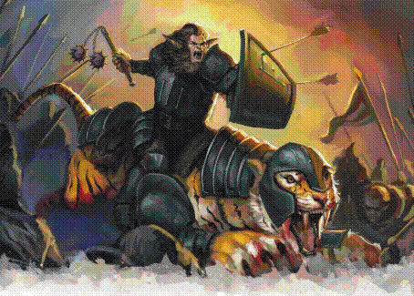

Raat shi anaa：仍将继续的故事。
在遥远的过去，有六位国王掌握权力。每位国王都试图对自己的人民尽职尽责：为他们带来繁荣和安全，同时打倒所有威胁他们的存在。六位国王一次又一次地把冲突演变成战争，然而，国王们的智谋在伯仲之间，他们手下勇士们的勇猛和战技又互相匹敌。没有人能够取胜，也没有人愿意妥协。
Jhazaal Dhakaan召集了六位国王，把他们带到一块布满血痕与断刃的原野，没有人能抵抗她的召唤。Jhazaal Dhakaan唱起dar（人民）之歌，提醒国王，他们都属于一个民族。她唱起muut（职责）之歌，叙述所有人的职责所在。她唱起atcha（荣誉）之歌，歌颂人民们将要获得的荣誉以及过去和未来的英雄们。她编织了一个梦，并将这个梦赐予六位国王和他们的跟随者们。正是这首歌让达坎帝国诞生，而它带来的梦仍然指引着我们。
我们的帝国是如此宏伟，以至于精魂都心生嫉妒。疯狂之主从阴影中爬出，把我们的子女变成怪物，企图用恐惧打败我们的人民。但是没有任何力量能够抵挡达坎的冠军勇士们。我们的英雄刺瞎了眼之王的眼睛，斩断了腐朽女王的根系。我们与强大的腐蚀者决战，并把他打倒，但他即使在陨落之后，仍然对打败他的英雄们低语着。他那歹毒的话语不断纠缠着冠军勇士们，淹没了Jhazaal的歌声。随着低语的蔓延，所有听到的人都忘记了muut（职责）与atcha（荣誉）之道。他们忘记了那个光荣的梦，忘记了身为dar（人民）的意义。duur’kala（挽歌咏者）和chot’uul（守梦人）团结在一起，但是这个状况没有简单的解答；时间与有毒的话语同在。我们最伟大的领袖们每人都带着一件我们人民留下的宝物进入深渊，步入敌人和毒素都无法穿越的古老堡垒中。我们留在那里，等待古老诅咒带来的回声消失，等待人民寻回他们的梦。
现在时机已到，我们已经从堡垒中复苏，回到那个曾经被疯狂所扭曲的世界。Chaat’oor（亵渎者）在我们的基础上建造了肮脏的城市。那些所谓的“地精”已经忘记了他们的荣誉和身为dar（人民）的意义。我们必须团结达坎的守护者们。我们必须回收我们的古代宝物，为将要登基的帝王加冕。在帝王的旗帜下，我们将净化这片土地，让我们被玷污的梦恢复原样。
Raat shan gath’kal dor：会休止但永不会结束的故事